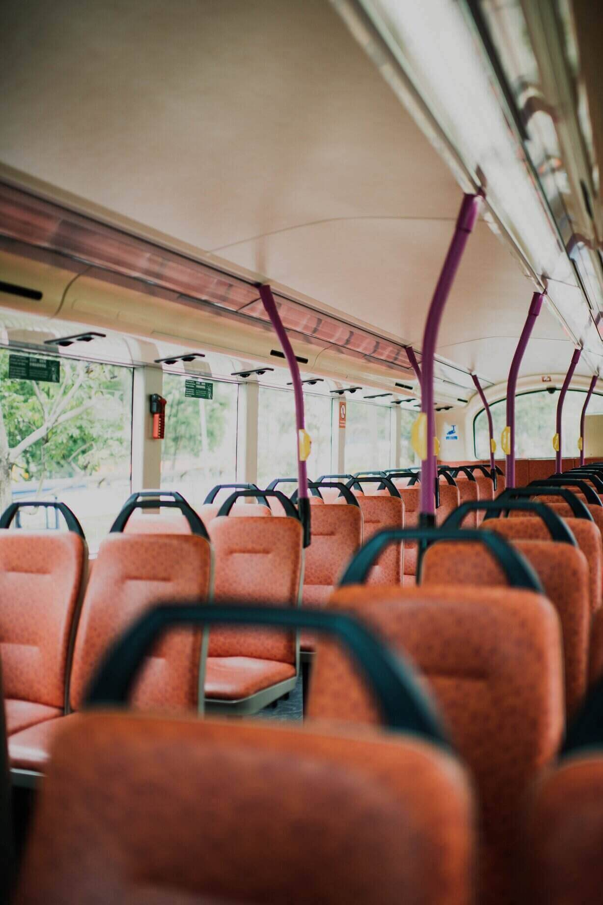
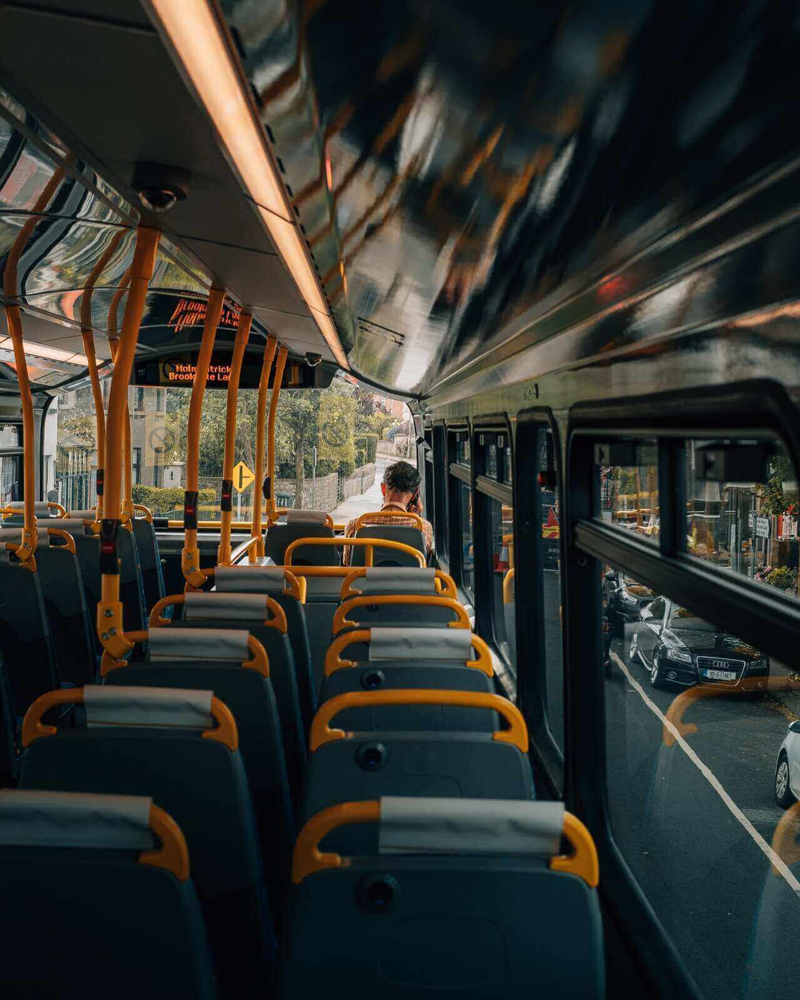

WELCOME TO NAIC LINER - RIDE ALONG WITH US!
Latest News from Naic Liner
Christmas Charity Event
Face Mask Policy
Career


Many people from Naic, Cavite needs public transportation in order to get to work or school in Manila. The bus ride going to Manila is about an hour. The route starts at Ternate, Cavite to PITX, Pasay. For most passengers this is the only fastest and safest bus route to get to Manila.